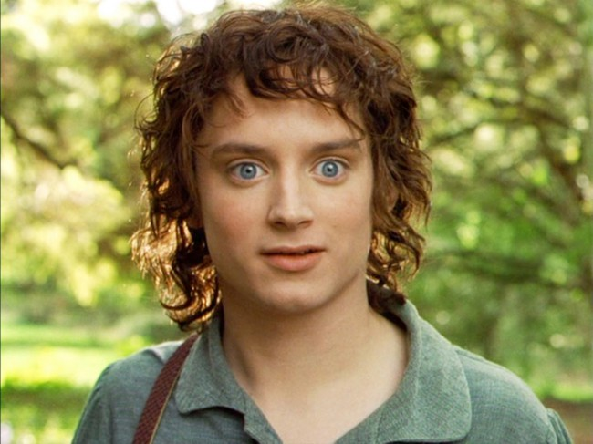
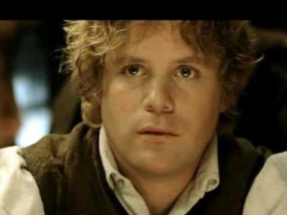
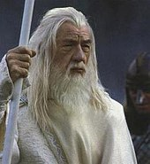

The Fellowship
| Name | Description | Image |
|---|---|---|
| Frodo Baggins | This young hobbit is the nephew of Bilbo Baggins and the inhertant of his ring. He was adopted by Bilbo after the death of his parents. Frodo is a stout, honest hobbit, who's compassion and intelligence comes into play numerous times during the novel. In addtion, he is sure footed, and is protrayed with a complexion of dark curly hair, large blue eyes, and thin mouth. |
 |
| Samwise Gamgee | Formerly Frodo's garderner, he is obliged to join Frodo on his quest after evesdropping on a conversation between his master and Gandalf. Sam is a simple hobbit with blond curly hair, brown eyes, and a with a tad more flesh on his bones than the other characters (except maybe Gimli). Despite Sam's simple persona, he is one of the bravest of the hobbits and will stop at nothing to protect Frodo. |
 |
| Merriadoc (Merry) Brandybuck | Merry along with Pippin, encounters Sam and Frodo in a farmer's field in the midst of a vegerable robbery. The pair are then swept into the adventure. Merry is mischevious but like most hobbits he is true of heart, and puts his life at risk for the protection of another nation. The young hobbit has curly dirty blonde hair, hazel eyes and a narrow face |
 |
| Peregrin (Pippin) Took | Pippin is Merry's partner in crime, equally mischevious yet the more ressourceful and independant of the two. He often provides the comic relief with his quick wit and scottish accent. The hobbit's complexion consists of light brown hair, hazel hair, and a wide mouth. |  |
| Gandalf (The Grey Wizard, The White Rider, Mithrandir) | Gandalf is a wizard clad in grey who wanders Middle Earth in the hopes of ading the free peoples of middle earth against the darkness of Sauron. He sports grey robes, a grey beard, a grey hat and wooden staff. He is a Maiar (Minor god) sent by the Valar (gods) in the form of an Itari to combat the darkness of Sauron. He is gifted with a wisdom and kindness beyond the capacite of even the oldest elves. Later on in the series he takes on the truer form of "Gandalf the White" allowing him to return from his fiery combat with a balrog and come to Gondor's aid. |   |
| Aragorn (Strider) | Aragorn initially joins the the four hobbits at the Inn of the Prancing Pony in the village of Bree, where he is posing for gandalf who was imprisoned at the time. Known as Strider to the hobbits, he is the heir to the throne of Gondor. Isuldir's heir is a leader and skilled with his legendary sword Anduril, he is humble yet strong willed and just. He has light green eyes, dark hair, and a light beard. Lastly, he is the lover of Arwen the daughter of Elrond. |  |
| Boromir | Boromir is sent by his father to represent the nation of Gondor on the fellowship. He is the heir to the stewardship of Gondor who rules in the absence of the king. Throughout his storyline his conflicted between his greed for the ring and aiding the fellowship through their journey. The Gondorian captain has a complesion of long dirty blond hair, a light beard, and brown eyes. In addition, he wears a shield and a horn. |  |
| Legolas | Legolas is the son of the elf king of Mirkwood. He has fair blond hair, sky blue eyes, and a chisled face. His weapon of choice is a bow and he posesses many talents born to an elf that help the felloswhip in dire situations such as: Powerfull vision and hearing, impecable reflexes, and a superios physica ability. |  |
Gimli son of Gloin | Gimli is the representative of the dwarves on the fellowship, he has a firece red beard, brown eyes, and is stout and short in stature like most dwarves. Gimli is a creature of his pride; however, unlike Boromir he is not vain, and understands when he is defeated. To start, he finds himself at odds with Legolas, but that animosity changes to a friendship during the novel. Lastly, his weapon of choice is an ax. |  |